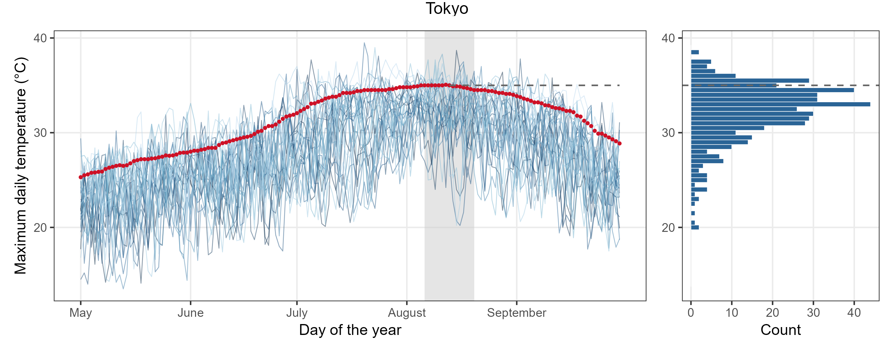
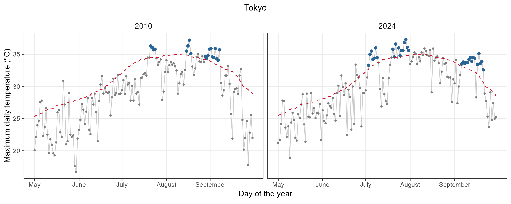

Heat waves are loosely defined as prolonged periods of extremely high temperatures. A popular definition of heat waves relies on the empirical quantile-based approach of Perkins and Alexander (2013), that define a heat wave as a period of at least three consecutive days during which the temperature exceeds a seasonally varying climatological threshold. The approach is implemented in the heatwaveR R package Schlegel and Smit (2018, 2021) and is based on Fischer and Schär, (2010), only differing in the temporal extension considered. Furthermore, Hobday et al. (2016, 2018) exploit this approach for characterising marine heat waves.
The quantile-based threshold is computed using a moving-window approach applied to the observed temperatures across all years in the sample and is year-invariant, that is $$u_{d,x} = q_{x}(\{y_{j,h}: h_{s}\leq h \leq h_e, |d-j| \leq D\})$$ where
As an illustration of the empirical quantile-based approach, the figure below represent the daily maximum temperatures (May–September) over 30 years (1995-2024) for Tokyo. The red dotted line represents the 90th percentile threshold. The shaded band highlights the 15-day moving window used to compute the threshold. The histogram shows the temperature distribution within that window, with the dashed line marking the 90th percentile threshold.

The plot below illustrates the heat waves detected through the empirical quantile-based threshold approach for two years (2010 and 2024) in Tokyo. The daily maximum temperatures (May–September) are depicted using grey points. The dashed green line corresponds to the 90th percentile threshold and the red points indicate days belonging to a heatwave (3 or more consecutive days exceeding the threshold). Under this setting, 3 and 5 heat waves are detected in 2010 and 2024, respectively, leading to 19 and 33 days in heat wave.
